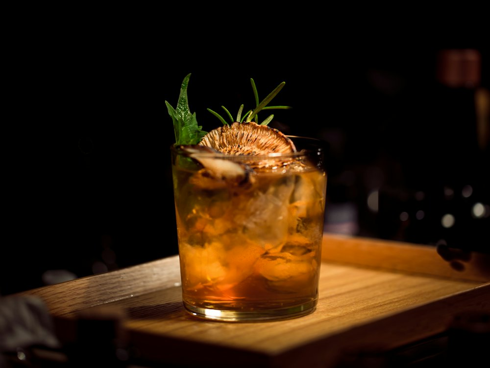

Stories
Бар · Лаунж-бар, коктейли · Алматы
Рейтинг 2ГИС
★ 4.9
4 351 оценок
Год открытия
нет данных
в открытых источниках не нашли
Средний чек
≈9 000 ₸
оценка по типу заведения
Адрес и часы
📍 пр. Жибек Жолы, 66, Алматы · Алмалинский район
🕒 часы работы уточняются — смотрите в 2ГИС
Удобства
О заведении
Лаунж-бар с летней террасой и живой музыкой. «Лучший бар 2026» по версии 2ГИС.
Меню
Рядом в справочнике
Smug Burger BBQ Bar · Spiros · Starbucks · Suli da Guli · Sumakh · Svaneti